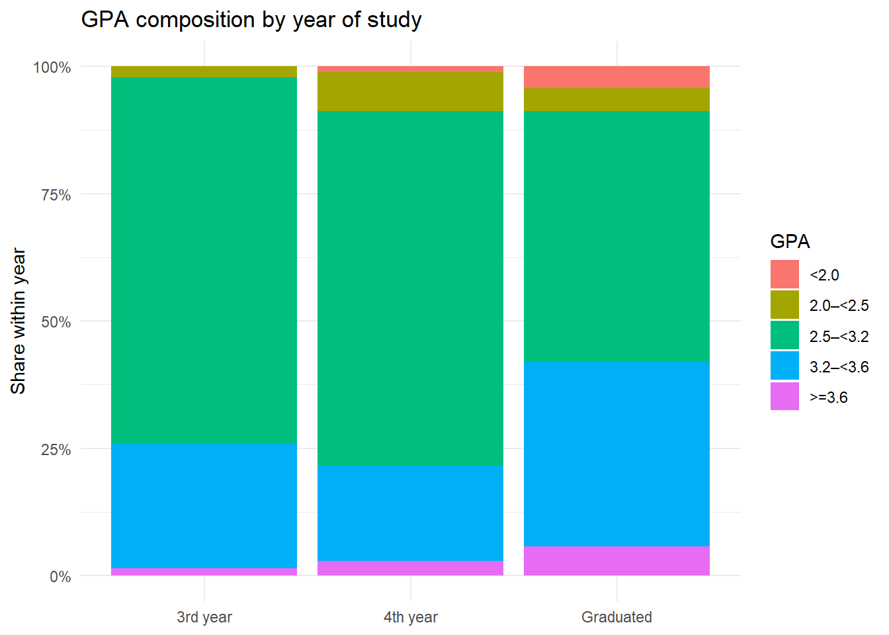
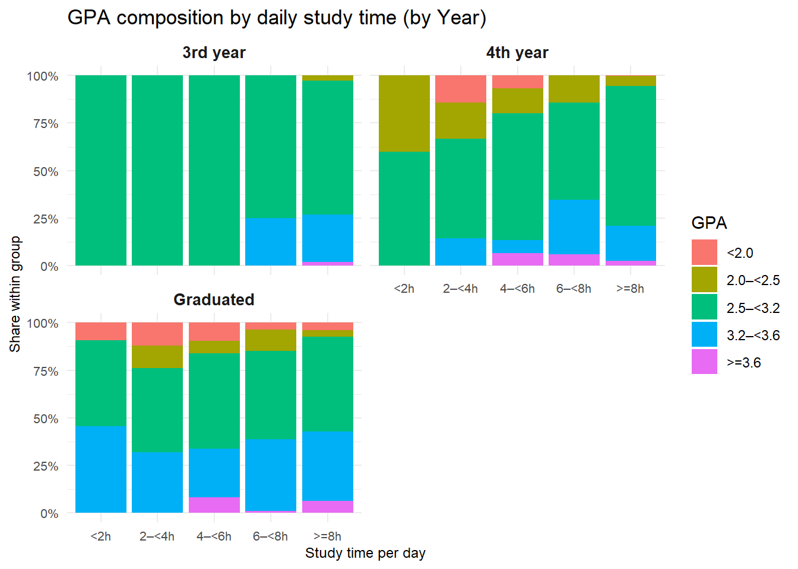
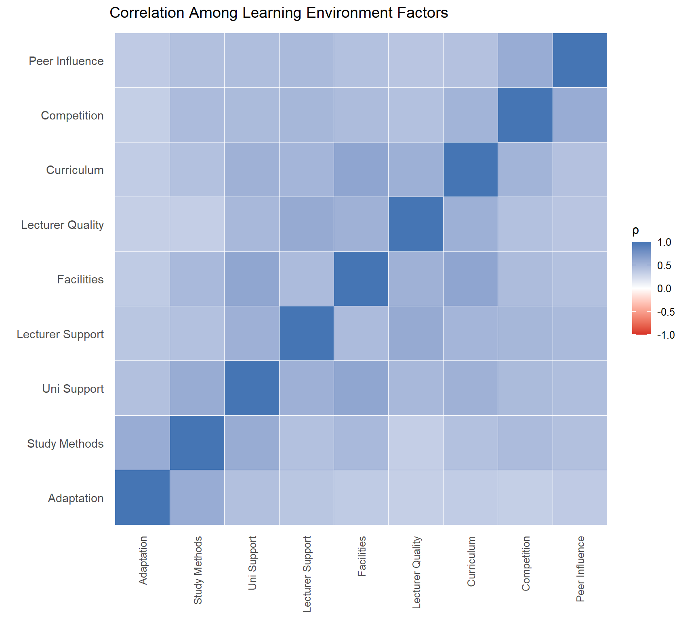
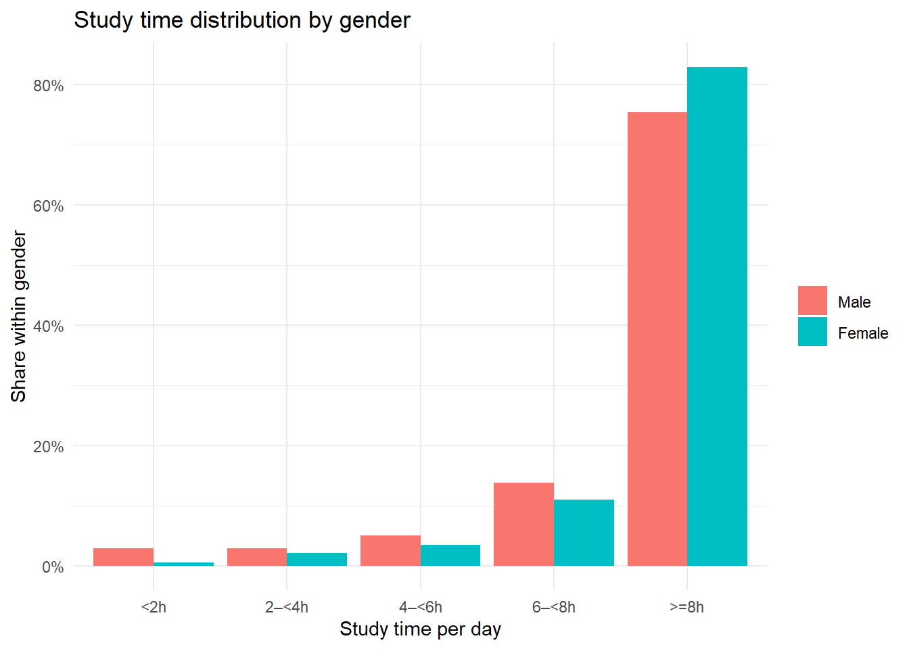

pacman::p_load(tidyverse, readxl, patchwork, scales)Take-Home Exercise 1
Factors impacting the learning outcomes of students at University of Education (Vietnam)
1.0 Getting Started
Install and launch the following R packages
2.0 Data
Loading the data to the R environment..
education_data <- "TE01/Data/Database_paper.xlsx"
df_raw <- read_excel(education_data, sheet = "Sheet1")3.0 Data Preparation
To prepare the dataset for analysis and visualization, data cleaning and recoding steps were performed.
Categorical variables stored as numeric codes in the raw survey - for example, Year, Gender, GPA etc, were converted into labelled variables to improve readability and interpretation in plots.
In addition, all Likert-scale perception items (1–5 scale) were explicitly converted to numeric values.
df <- mutate(df_raw, Year = factor(Year, levels = 1:5, labels = c("1st year","2nd year","3rd year","4th year","Graduated")), Gender = factor(Gender, levels = c(1,2), labels = c("Male","Female")), Time_SocicalMedia = factor(Time_SocicalMedia, levels = 1:5, labels = c("<1h","1–<2h","2–<3h","3–<4h",">=4h")), Time_Studying = factor(Time_Studying, levels = 1:5, labels = c("<2h","2–<4h","4–<6h","6–<8h",">=8h")), GPA = factor(GPA, levels = 1:5, labels = c("<2.0","2.0–<2.5","2.5–<3.2","3.2–<3.6",">=3.6")), Adapt_Learning_Uni = as.integer(Adapt_Learning_Uni), Study_Methods = as.integer(Study_Methods), SupportOf_Uni = as.integer(SupportOf_Uni), SupportOf_Lec = as.integer(SupportOf_Lec),Facilitie_Uni = as.integer(Facilitie_Uni), Quality_Lecturer = as.integer(Quality_Lecturer),TrainingCurriculum = as.integer(TrainingCurriculum), Competitive_Class = as.integer(Competitive_Class), InfuenceF_Friends = as.integer(InfuenceF_Friends)
)plot_likert_stack <- function(data, var, title) {
df2 <- count(data, resp = .data[[var]])
df2 <- mutate(df2, resp = factor(resp, levels = 1:5, labels = c("1 Not at all","2 Little","3 Moderate","4 Quite","5 Very")), pct = n / sum(n))
ggplot(df2, aes(x = 1, y = pct, fill = resp)) + geom_col(width = 0.6) + coord_flip() + scale_y_continuous(labels = scales::percent_format()) + labs(title = title, x = NULL, y = "Share", fill = NULL) + theme_minimal()
}df <- mutate(df, Policy_Stu = factor(Policy_Stu, levels = c(1,2), labels = c("Yes","No")))4.0 EDA
NoteVisualization 1 - GPA distribution

| GPA Category | Number of Students | Percentage |
|---|---|---|
| <2.0 | 73 | 3.4% |
| 2.0–<2.5 | 109 | 5.0% |
| 2.5–<3.2 | 1189 | 54.8% |
| 3.2–<3.6 | 692 | 31.9% |
| >=3.6 | 107 | 4.9% |
Total number of students: 2170Observation:
Overall, the GPA distribution is concentrated in the mid performance range. Most students fall within the 2.5 to <3.2 and 3.2 to <3.6 categories, while only small proportions appear at the lowest and highest ends. This indicates that the cohort largely consists of average to good performers rather than extreme achievers, suggesting a relatively homogeneous distribution of academic outcomes.
total_students <- nrow(df)
ggplot(mutate(count(df, GPA), pct = n / sum(n)), aes(GPA, pct, fill = GPA)) + geom_col() + coord_flip() + scale_y_continuous(labels = scales::percent_format()) + labs(title = "Overall GPA Distribution", x = NULL, y = "% of students", fill = "GPA") + theme_minimal()
knitr::kable(mutate(count(df, GPA, name = "Number of Students"), Percentage = scales::percent(`Number of Students` / sum(`Number of Students`), accuracy = 0.1)), col.names = c("GPA Category", "Number of Students", "Percentage"))
total_students <- nrow(df)
cat("Total number of students:", total_students)
NoteVisualization 2 - GPA Distribution by Year

| Year | Number of Students | Percentage |
|---|---|---|
| 3rd year | 135 | 6.2% |
| 4th year | 441 | 20.3% |
| Graduated | 1594 | 73.5% |
Total number of students: 2170Observation:
Performance patterns vary slightly across academic years. Senior students and graduates generally exhibit a higher proportion of good and excellent GPA compared with earlier year students. This may reflect accumulated experience, improved study strategies and better adaptation to university expectations over time. In contrast, newer students show more mid range outcomes, possibly due to transitional challenges. The results suggest that academic achievement may improve progressively as students become more familiar with the learning environment.
ggplot(mutate(group_by(count(df, Year, GPA), Year), pct = n / sum(n)), aes(Year, pct, fill = GPA)) + geom_col(position = "fill") + scale_y_continuous(labels = scales::percent_format()) + labs(title = "GPA composition by year of study (No. of students = 2170)", x = NULL, y = "% of students", fill = "GPA") + theme_minimal()
knitr::kable(mutate(count(df, Year, name = "Number of Students"), Percentage = scales::percent(`Number of Students` / sum(`Number of Students`), accuracy = 0.1)))
total_students <- nrow(df)
cat("Total number of students:", total_students)
NoteVisualization 3 - Social media time vs GPA

Total number of students: 2170Observation:
Across all academic years, heavier daily social media use is associated with a slightly lower share of strong academic outcomes. Students spending more than three to four hours per day tend to show comparatively fewer high GPA and relatively more mid range results. Although the differences are modest rather than dramatic, the pattern is consistent across cohorts.
ggplot(mutate(group_by(count(df, Year, Time_SocicalMedia, GPA), Year, Time_SocicalMedia),pct = n / sum(n)),aes(Time_SocicalMedia, pct, fill = GPA)) + geom_col(position = "fill") + facet_wrap(~Year, ncol = 2, scales = "fixed") + scale_y_continuous(labels = scales::percent_format()) + labs(title = "GPA composition by daily social media use (by year of study)", x = "Social media time per day", y = "% of Students within its group", fill = "GPA") + theme_minimal() + theme(axis.text = element_text(size = 8), axis.title = element_text(size = 9), strip.text = element_text(size = 10, face = "bold"))
total_students <- nrow(df)
cat("Total number of students:", total_students)
NoteVisualization 4 - Study time vs GPA

Total number of students: 2170Observation:
Across all academic years, students who report longer daily study hours tend to show a higher share of better GPA outcomes. Groups studying six hours or more generally contain relatively more high performing students, while shorter study duration display a larger proportion of mid to lower range of GPA. Although the differences are moderate rather than dramatic, the pattern is consistent across cohorts. Overall, study time appears to be positively associated with academic performance.
ggplot(mutate(group_by(count(df, Year, Time_Studying, GPA), Year, Time_Studying),pct = n / sum(n)),aes(Time_Studying, pct, fill = GPA)) + geom_col(position = "fill") + facet_wrap(~Year, ncol = 2, scales = "fixed") + scale_y_continuous(labels = scales::percent_format()) + labs(title = "GPA composition by daily study time (by Year)", x = "Study time per day", y = "Share within group", fill = "GPA") + theme_minimal() + theme(axis.text = element_text(size = 8), axis.title = element_text(size = 9), strip.text = element_text(size = 10, face = "bold"))
total_students <- nrow(df)
cat("Total number of students:", total_students)
NoteVisualization 5 - University vs Lecturer support

| Likert Level | University Support (No. of Students) | Lecturer Support (No. of Students) |
|---|---|---|
| 1 Not at all | 51 | 20 |
| 2 Little | 61 | 28 |
| 3 Moderate | 553 | 448 |
| 4 Quite | 675 | 706 |
| 5 Very | 830 | 968 |
Total number of students: 2170Observation:
Perceptions of both university and lecturer support are strongly positive, with most responses concentrated in the “Quite” and “Very” supportive categories. Lecturer support appears marginally stronger than university support, indicating that direct interaction with teaching staff may have a greater perceived impact on learning. Negative responses are minimal, suggesting that students generally feel well assisted academically and administratively. Such supportive conditions likely contribute to maintaining stable and satisfactory learning outcomes.
p5_uni_support <- plot_likert_stack(df, "SupportOf_Uni", "Perceived university support")
p5_lec_support <- plot_likert_stack(df, "SupportOf_Lec", "Perceived lecturer support")
p5_uni_support / p5_lec_support
support_table <- data.frame(Likert_Level = c("1 Not at all","2 Little", "3 Moderate", "4 Quite", "5 Very"), University_Count = count(df, SupportOf_Uni)$n, Lecturer_Count = count(df, SupportOf_Lec)$n)
knitr::kable(support_table, col.names = c("Likert Level", "University Support (No. of Students)", "Lecturer Support (No. of Students)"))
cat("Total number of students:", nrow(df))
NoteVisualization 6 - Learning Environment Factors

Observation:
The heatmap shows moderate positive relationships among several learning environment factors. Adaptation, effective study methods and lecturer quality tend to move together, indicating that these aspects reinforce one another. Students perceiving strong teaching quality also report better adjustment and learning behaviors. However, correlations are not excessively high, suggesting each factor contributes uniquely to outcomes. Overall, academic performance appears to be shaped by multiple interconnected yet distinct elements of the learning experience rather than any single dominant driver.
likert_vars <- c("Adapt_Learning_Uni","Study_Methods","SupportOf_Uni","SupportOf_Lec", "Facilitie_Uni","Quality_Lecturer","TrainingCurriculum","Competitive_Class","InfuenceF_Friends")
likert_labels <- c("Adaptation","Study Methods","Uni Support","Lecturer Support","Facilities","Lecturer Quality","Curriculum", "Competition","Peer Influence")
df2 <- select(df, all_of(likert_vars))
df2 <- drop_na(df2)
corr_mat <- cor(df2, method = "spearman")
colnames(corr_mat) <- likert_labels
rownames(corr_mat) <- likert_labels
corr_long <- as.data.frame(as.table(corr_mat))
corr_long <- rename(corr_long, var1 = Var1, var2 = Var2, rho = Freq)
ggplot(corr_long, aes(var1, var2, fill = rho)) + geom_tile(color = "white") + coord_equal() + scale_fill_gradient2(low = "#d73027", mid = "white", high = "#4575b4", midpoint = 0, limits = c(-1,1)) +
labs(title = "Heat map of Learning Environment Factors", x = NULL, y = NULL, fill = "ρ") + theme_minimal(base_size = 12) + theme(axis.text.x = element_text(angle = 90, vjust = 0.5, hjust = 1), axis.text.y = element_text(size = 11), panel.grid = element_blank())
NoteVisualization 7 - Government Support

| Government Policy Support | Number of Students | Percentage |
|---|---|---|
| Yes | 766 | 35.3% |
| No | 1404 | 64.7% |
Total number of students: 2170Observation:
The heatmap illustrates the distribution of GPA categories across students with and without government policy support. The overall pattern appears broadly similar for both groups, with the largest concentration in the 2.5 to <3.2 GPA range. Differences across categories are relatively modest, suggesting that policy support status does not correspond to dramatic shifts in academic performance distribution. While slight variations exist in the proportion of higher GPA bands, the overall structure of performance remains comparable between the two groups.
df %>%
count(Policy_Stu, GPA) %>%
group_by(Policy_Stu) %>%
mutate(pct = n / sum(n)) %>%
ggplot(aes(Policy_Stu, GPA, fill = pct)) +
geom_tile(color = "white", size = 0.5) +
scale_fill_gradient(low = "#e6f2ff", high = "#003366", labels = scales::percent_format(), limits = c(0, 0.7)) + labs(title = "Heatmap of GPA by Government Policy Support", x = "Policy Support", y = "GPA", fill = "% of students") + theme_minimal(base_size = 12)
knitr::kable(mutate(count(df, Policy_Stu, name = "Number of Students"), Percentage = scales::percent(`Number of Students` / sum(`Number of Students`), accuracy = 0.1)), col.names = c("Government Policy Support", "Number of Students", "Percentage"))
total_students <- nrow(df)
cat("Total number of students:", total_students)